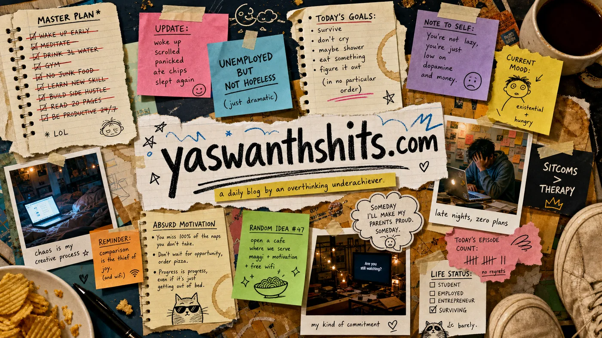

Loading today's damage
The scrapbook is checking the evidence locker.
daily blog // public recovery arc
A scrapbook for bad decisions, tiny wins, unemployed thoughts, sitcom binges, and the heroic attempt to become a functioning adult before the Wi-Fi bill arrives.

public introduction
a.k.a. Yaswanth Bopparaju // THE DEVARA OP
I am the main character of a very low-budget comeback arc: currently unemployed, heavily sitcom-certified, emotionally attached to biryani, and trying to become better before my search history becomes my biography.
This site is my daily evidence locker. One photo, one confession, one joke, one tiny attempt to not lose to yesterday's version of me.
daily scraps
A timeline of bad choices, minor achievements, and unhinged thoughts, taped to the page.
The scrapbook is checking the evidence locker.
Latest post
Loading the latest blog post...
system stats